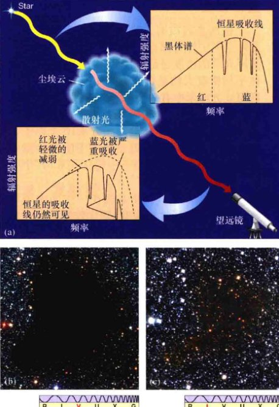
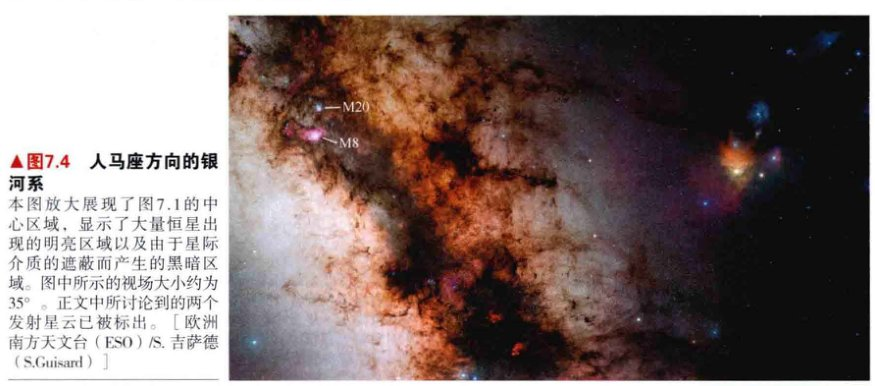
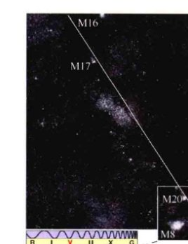
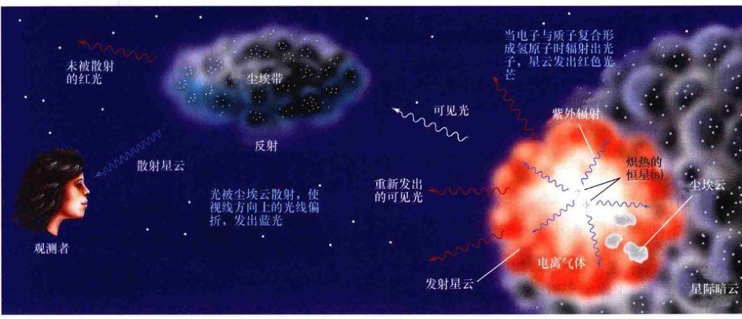
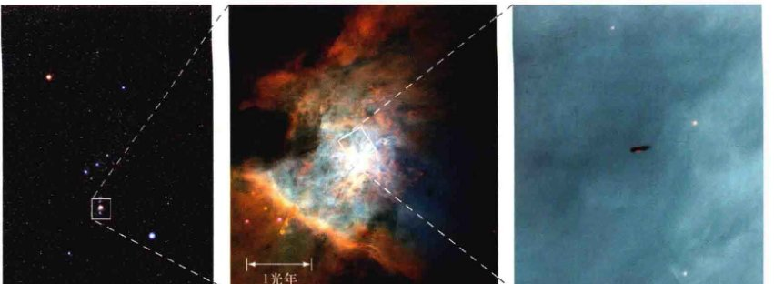
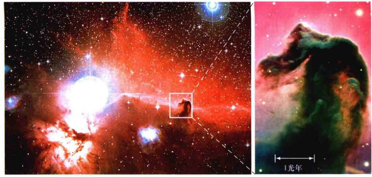
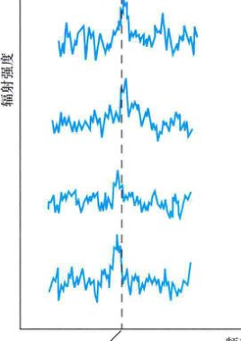

第18章 星际介质 弥漫于恒星之间的气体和尘埃
学习目标
本章的学习将使你能够：
- 总结星际介质的组成和物理性质。
- 描述发射星云的性质，并说明其在恒星生命周期中的重要性。
- 列举出一些星际暗云的基本性质。
- 列举出探测星际物质性质所需的射电天文技术。
- 说明星际分子的性质和重要性。
银河系里不只有恒星和行星，在我们周围的星际空间中同时还存在着弥漫于恒星之间、虚空之中的不可见物质。这些物质的密度极低，是恒星或者行星密度的亿亿亿分之一（1/1024）。这远比地球上能够制造的最好的真空环境要稀薄得多。这一切仅仅是因为星际空间如此广阔，以至于用其质量除以体积后所得的密度微不足道了。
我们为什么关心这种近乎完美的真空环境呢？有以下三点原因：第一，这些“虚空”中包含的物质的总质量与恒星的质量相当；第二，恒星诞生于星际空间之中；第三，恒星死亡之后会将自身物质重新抛射回星际空间之中。可以说，星际空间是宇宙各处天体进行物质交换的最重要的“十字路口”。
18.1 星际介质
图18.1是一副拼接而成的图片，其所覆盖的区域比我们到目前为止所研究的所有天体都要大得多。从地球看上去，这幅全景图覆盖并延伸到了整个天空。在一个晴朗的夜晚，这就是我们裸眼可见的银河系。

银河系全景图，360°覆盖了整个南天球和北天球。这条亮带就是银河系的中心盘面部分，那里聚集着非常多的恒星，同时也有很多星际气体和尘埃。图18.4中显示的区域就是此图中白色方框所对应的区域。[欧洲南方天文台 (ESO)/S. 布鲁尼尔 (S.Brunier)]
图片中明亮的区域是无数颗恒星聚集起来的地方，因为望远镜的分辨率不足以分辨出单个的恒星，因此这些恒星聚集起来形成了一团模糊的明亮区域。然而，图中黑暗的区域并不是恒星之间的空洞区域。因为星际介质阻挡了位于其后面的恒星的光芒，所以使本来由恒星组成的相当平滑的明亮区域变成了黑暗的“空洞”。由于它们很暗，因此我们很难在研究恒星的光学波段观测星际介质。简而言之，在光学波段，你什么都看不到。
气体与尘埃
从图18.1（还可见图18.4）可以看出，星际介质的分布非常不均匀。在某些区域，星际介质的分布十分稀薄，对光线的阻挡十分微弱，使得我们足以观测到距离太阳几十亿秒差距的天体。在另外一些方向上，存在一定量的星际介质，对光线有一定的阻隔，这使得我们难以看到距离我们几千秒差距的天体，但是邻近的恒星却仍然可见。还有一些区域因为星际介质的严重阻挡，即便是来自离我们很近的恒星光线都被吸收了，使我们无法从地球上观测到这些恒星。
我们将恒星之间的物质的集合称为星际介质，它主要由气体和尘埃两部分组成，二者混合在星际空间之中。气体成分主要由原子构成，它们的平均大小约为 10-10m (0.1nm)，此外还有一些直径不超过 10-9m 的小分子。星际尘埃则要复杂得多，它由成团的原子和分子组成。星际尘埃不同于我们所熟知的粉笔灰，或是由极微小的颗粒构成的烟尘、煤灰或雾。
除去众多原子和分子气体的窄吸收线，气体本身不会再吸收更多的辐射了。图18.1中明显的遮挡是由尘埃造成的。就跟一辆汽车的车灯无法照亮浓雾中的前方道路一样，来自遥远恒星的光同样也无法穿透这些星际尘埃分布最致密的区域。
消光和红化
我们可以利用尘埃的遮挡来测量星际尘埃的数量和大小。经验定律告诉我们，尘埃颗粒可以且只会吸收波长小于或者约等于其半径的光。因此，对于大小不同的尘埃来说，它们总是倾向于更有效地阻挡短波的光辐射。此外，甚至对给定大小的尘埃颗粒来说，波长越短的光，受到尘埃阻挡（吸收和散射）的总量就会越多。真实的星际尘埃粒子，或称尘埃颗粒，直径大约为 10-7m (0.1μm)，与可见光的波长相当。因此，尘埃对长波的电磁辐射，即射电和红外辐射来说是透明的，而对光学和紫外这些短波辐射来说是不透明的。星际尘埃对星光总的消弱作用被称为消光。
由于星际介质对短波的阻挡能力强于长波辐射，因此，在来自遥远恒星的光线中，频率更高（“蓝色”）的光子会更容易被星际介质所“劫持”。所以，除了恒星的亮度一般会被削弱之外，恒星看起来也倾向于比真实情况更红。这种效应被称为红化，从概念上来讲，类似于地球上日落时产生红色晚霞的过程。
(a) 恒星的光在穿越一片尘埃区域时会被减弱和红化，然后才会到达地球，但发射线仍然清晰可辨。
(b) 被称为“巴纳德68”的星际尘埃云，除了靠近尘埃云边缘的区域可以透射过部分背景星光外，整个尘埃云完全遮蔽了可见光。该尘埃云距离我们520光年，延伸0.5光年。
(c) (伪色图) 说明红外辐射是可以穿透“巴纳德68”尘埃云的。
正如18.2(a)所示，消光和红化可以改变恒星的视亮度和颜色。然而，我们仍然可以从到达地球的光谱中辨认出恒星原本的吸收线，因此，我们可以根据吸收线把恒星归为不同的光谱型。天文学家可以利用这一事实来研究星际介质。天文学家通过主序星的光谱和光度类型来了解恒星的真实的光度和颜色。(6.5节、6.6节) 然后，他们再测量恒星光线在前往地球的路途中所受的消光和红化程度，接着，这些测量结果使得天文学家可以估计在朝向恒星的视线方向上的星际尘埃颗粒的数量和尺寸大小。通过在许多不同的视线方向和距地球远近不一的距离上重复这类对恒星的测量，天文学家已经建立起了太阳临近区域内有关星际介质分布和整体属性的图景。
图18.2(b)展示了一类被称为球状体的致密星际尘埃云（我们将在18.3节中详细讨论这类尘埃云），从图中可以清晰地看出尘埃云的红化作用。我们将这团云的中心区域称为“巴纳德68”，其中光学波段的所有辐射都被阻挡了，因此星光无法穿过此区域。尽管如此，在尘埃云的边缘区域，由于吸收光子的星际介质相对较少，因此一些光可以穿过这些区域。值得注意的是，尘埃云对恒星的消光和红化作用是相对的，这与你用什么方式观测直接相关。图18.2(c)展示了同一个尘埃云在红外波段下的图像。这时，更多的辐射通过了尘埃云，但即便如此，我们仍可以观察到红化现象（或红外波段的图像）。
整体密度
银河系内没有一处真正意义上的虚空，星际空间中处处都有气体和尘埃。尽管如此，星际介质的密度还是非常低的。星际气体的整体平均密度大约是每立方米中有 106 个原子，即每立方厘米中有一个原子。不过，星际气体的密度在不同的空间区域内大相径庭，可以从每立方米 104 个原子到每立方米 109 个原子。如此稀疏的物质密度远比地球上的实验室中能够制造出的最好真空——每立方米 1010 个原子——要低得多。
星际尘埃比气体更加稀少。空间中平均每约万亿个原子才对应有1颗尘埃颗粒——每立方米的空间中只有 10-6 个尘埃颗粒，或者说，每立方千米的空间中才有1000个尘埃颗粒。在星际空间的某些区域内，尘埃和气体非常稀薄，如果把与地球一样大的区域内的尘埃和气体全部收集起来，那么所有的这些物质连制造一对骰子都不够。
为什么如此稀薄的物质可以如此有效地减弱辐射呢？这其中的奥妙源于空间的广阔。恒星之间典型的距离（对于太阳的近邻区域来说是1pc）远比恒星本身的大小（大约为 10-7pc）要大得多。恒星和行星跟广阔的宇宙相比只不过是沧海一粟。因此，不管物质有多稀薄，都可以积少成多。例如，假想一个圆柱体，其截面面积为 1m2，其长度等于从地球到半人马座阿尔法星的距离。这样的一个圆柱体内可以包含超过 1000亿亿个尘埃颗粒。（6.1节）在这样的巨大尺度上，尘埃颗粒慢慢地堆积，但最终一定会有效地阻挡可见光以及其他短波长的电磁波。尽管如此，物质的密度仍旧非常低，太阳临近区域内的星际空间中所包含的物质几乎与以恒星形式存在的物质差不多一样多。
星际介质的成分
当来自遥远恒星发出的光穿过视线方向上的一片气体云时，会形成一系列的吸收线（参见18.3节），天文学家正是通过对这些吸收线的观测研究，才很好地了解了这些星际气体的构成。在多数情况下，星际气体的元素丰度跟其他天体非常类似，比如太阳、其他恒星和类木行星等。大部分气体——大约90%以上——都是氢原子或者氢分子，大约9%是氦，剩余的1%是其他的重元素。对于其中一些重元素——例如碳、氧、硅、镁，还有铁等——来说，它们在星际气体内的丰度要远远低于在太阳系或者恒星中的丰度。最可能的解释之一是，星际气体中的这些元素大部分都被用于形成星际尘埃。星际尘埃从气体中“夺取”了这些元素，将它们锁定到尘埃里，使它们以一种难以被观测到的形式存在着。

(a) 根据对偏振辐射的研究，天文学家推断，典型的星际尘埃颗粒的大小只有万分之一毫米。尽管如此，由于广阔的宇宙空间中有许多的尘埃，多到足以阻挡我们视线方向上传播的光。
(b) 计算机模拟演示了尘埃是如何在星际空间中通过碰撞、黏连和碎裂而“长大”的。
不同于星际气体，人们至今都没有完全明白星际尘埃的构成。我们有一些红外波段观测的证据显示，星际尘埃中包含硅酸盐、石墨和铁，这些元素在星际气体中含量很少，这也支持了前面提到的星际尘埃源自于星际气体的理论。星际尘埃很可能还含有一些“脏冰”，这些“脏冰”是水冰和氨、甲烷以及其他化合物的混合物。星际尘埃的组成跟太阳系内彗星彗核中的物质构成非常相似。
尽管星际尘埃很稀薄，但是它们将宇宙变成了一个相对雾霾漫天的地方。相比之下，地球的大气要干净100万倍。在我们的空气中，每 1018 个原子才对应有1个尘埃颗粒。如果我们空气中的尘埃的密度跟星际介质中的尘埃密度一样大，那么空气将变成一团非常厚重的浓雾，使得我们无法看清自己举起的双手。
尘埃形状
奇怪的是，相比尘埃的成分，天文学家对尘埃形状的了解要多得多。尽管在星际气体里的原子基本是球体，但尘埃颗粒却不是。如图18.3(a)所示，人们认为单个的尘埃颗粒呈现椭球或圆柱体形状。然而，近期的理论工作通过对尘埃颗粒的碰撞、粘连以及分裂进行了模拟，预测尘埃颗粒在更大尺度上的结构可能更为复杂，如图18.3(b)所示。
天文学家发现，恒星的光线经过星际介质后会减弱，并且会产生部分偏振，因此他们推断，尘埃应该具有纵向排列的结构。我们已经在第2章里讲过，光的本质是具有振动的电场和磁场的电磁波。（2.2节、图2.7）在通常情况下，这些电磁波的指向是随机分布的，即辐射是非偏振的。恒星从光球层发出的辐射是非偏振的。然而，在适当情况下，电磁辐射在通往地球的过程中可以被偏振化，电场的振动方向此时会几乎都在同一个平面内。电磁辐射与形状细长的尘埃相互作用就会产生上述情况，尘埃会吸收振动方向上与其长轴平行的电磁波。
✓ 如果星际空间是一个近乎完美的真空，那为什么还会有那么多的尘埃遮挡住星光？
18.2 发射星云
图18.4为图18.1的中心区域（图18.1中所示的矩形区域）的放大图，这个区域位于人马座，整个区域星罗棋布，富含星际介质。天空中一块块斑状的消光区域印证了这些星际介质的存在。此外，我们还可以清晰地看到其他几大片的模糊区域。这些模糊的天体，被标作M8、M16、M17和M20，它们分别对应于18世纪法国天文学家查尔斯·梅西耶编排的星表中第8、16、17和20号天体。现今我们知道，这几个天体是发射星云——发光的云和炽热的星际介质。将图18.4的左上部分进一步放大，即图18.5，星云便更清晰地展现出来。
本图放大展现了图18.1的中心区域，显示了大量恒星出现的明亮区域以及由于星际介质的遮蔽而产生的黑暗区域。图中所示的视场大小约为35°。正文中所讨论到的两个发射星云已被标出。[欧洲南方天文台 (ESO)/S. 吉萨德 (S.Guisard)]
观测发射星云
历史上，天文学家曾用星云代指一切天空中“模糊不清”（或明或暗）的一类天体，你可以在天空中清晰地辨认出这类天体，但不同于恒星和行星，它们的边界比较模糊。我们现在知道了，那些星云很多（尽管不全是）都是星际气体和尘埃。
如果是云遮挡了视线方向上后面的恒星，那么我们就会在明亮的天空背景上看到一小块黑色的区域，如图18.1、图18.2(b)和图18.4所示，我们称之为暗云。但如果星云内部有一些天体，例如年轻的恒星可能使这团云发光，那么我们就会看到明亮的发射星云。
在图18.5中，我们利用分光视差法测量出了这几个发射星云内部的可见的恒星，其距离地球的范围大概是从1200 pc (M8) 到 1800 pc (M16) 之间。(6.6节) 总而言之，这四个星云的距离都接近隐藏在银河系尘埃盘内天体的可见极限。左上角的M16到靠近底部的M20的距离大约是1000pc。
部分银道面（大约有12°）的黑白图，这部分银道面是图18.4所展示的一部分天区。图中展现了恒星、气体、尘埃，以及若干个明显的模糊光斑，即发射星云。银道面在图中用白色的斜线标出。[哈佛大学天文台 (Harvard College Observatory)]
通过逐步放大视场中一个个更小的区域，我们可以更清楚地了解这些星云。图18.6是图18.5底部区域的一个放大图，图中位于上面的星云是M20、下面的是M8，它们之间只相隔几度。图18.7是图18.6上面部分的放大图，显示了M20更多的细节及其周围的环境。整幅图覆盖的物理尺度约为10pc。正如图18.4中所展示的那样，尽管发射星云是整个宇宙中最美妙的天体之一，但实际上对于整个银河系来说，它们只是一些很小的、不起眼的小亮斑。天文学中的观测视角才是关键。


此图为图18.5底部放大区域的真彩图。可以清晰地看到顶部的M20和底部的M8。这两个梅西耶天体在天空中只有几度的距离。[R. 根德勒 (R.Gendler)]
互动图18.7 三叶星云 (右)
(a) 更进一步地放大图18.6靠上的部分，我们可以看到M20及其所处的星际环境。我们之所以称其为三叶星云，是因为星云间的尘埃带（黑色）的中间部分被三等分了。星云本身（红色部分）的尺度大约为20个光年。蓝色的反射星云与红色的发射星云之间没有关联，星云的尘埃反射星光使反射星云发光。
(b) 斯比泽空间望远镜拍摄的红外伪色图像揭示了星云中红外亮的区域，主要是位于那些尘埃带的恒星形成活动区。[美国大学天文联盟 (AURA)、美国国家航空航天局 (NASA)]
图18.5至图18.7所展示的发射星云是一些发光的电离气体，其中心或附近都至少有一颗刚刚形成不久的O型或B型星，它们在星云里产生了大量的紫外辐射。随着紫外光子从恒星向外逃逸，它们会紧接着电离周围的气体。电子跟原子核复合之后便会辐射出可见光，使得气体云发光，甚至是发出荧光。(3.2节) 这些气体云——实际上是所有的发射星云——发出的光之所以偏红，是因为其中的氢原子辐射出的光子处于电磁波谱的红端，即它们辐射出的电磁波波长为656.3nm——也就是第3章中讨论过的Hα谱线辐射。（详细说明3-1）星云中的其他元素也会产生复合发射的现象，但氢原子在宇宙中是如此丰富，以至于其辐射占据了主导地位。
从图18.5~7.7可以清楚地看到，在发光的星云中有着交错贯穿的尘埃暗带。这些尘埃带是星云的一部分，并非是正巧挡在视线方向上的尘埃带。而在图18.6和图18.7中，出现在M20上面的蓝色区域是另外一类星云，它与红色的发射星云之间并没有关联，我们称其为反射星云，这是因为反射星云中的尘埃颗粒将M20发出的恒星光散射了，因而看上去像是在发出蓝光。反射星云看起来偏蓝跟地球蓝色的天空有着异曲同工之妙——波长更短的蓝光更容易被星际介质散射并传向地球，落在我们的探测器上。图18.8描绘了一些发射星云的重要特征，展示了它与其中心恒星、星云本身以及周围星际介质之间的关联。
发射星云是由一到多颗恒星所发出的紫外辐射电离部分星际气体云而产生的。如果星光碰巧照射到尘埃云上，那么部分辐射，特别是蓝端的短波辐射就会被尘埃散射，从而传到地球，我们因而就会看到反射星云。
图18.9展现了图18.5中两个星云放大的细节特征。需要再次注意图18.9(a)和图18.9(c)中，发射星云内部有炽热、明亮的恒星，而且星云的主导辐射是红光。从图18.9(b)和图18.9(d)中可以更清楚地看出星云和其尘埃带之间的关系。在发射星云的背景上，同时有着气体区域和尘埃的剪影，并且也被前景星云中的恒星照亮。
从图18.9(b)中可以清楚地看出恒星和气体之间激烈的相互作用。在这张哈勃太空望远镜所拍摄的壮丽图像上可以看到三根暗柱，它们是正在形成恒星的星际气体云的一部分。其余在年轻恒星附近的气体云早已被加热，同时在光致蒸发作用下，被恒星所产生的辐射所驱散。图中可见柱体边缘的绒毛状结构，特别是在顶部右侧以及中间部分，正是由正在进行的光致蒸发作用所产生的。（在本章开篇的图片中，你可以清楚地看到M16中另一个类似的柱状结构。）随着光致蒸发作用的继续，不太致密的星际介质首先被耗尽，而先前气体云中较为致密的部分得以保留下来，这如同风和流水侵蚀沙漠中和海岸边较柔软的岩石，从而雕蚀出令人惊骇的结构。这是一个动态的过程：柱状结构最终会被摧毁，但或许至少在未来的几百或几千年内还不会发生。

图18.5部分区域的放大图。M16、鹰状星云(a)和鹰状星云中由尘埃和冷气体构成的巨大柱状体(b)的近景图像，从图中也可以看到由恒星紫外辐射在原始星云上雕蚀出的精致结构。M8、珊瑚星云(c)及其内部核心被称为沙漏星云(d)的高分辨率图像。不同的颜色源自于不同波段的观测：绿色代表氢原子的辐射，红色代表一次电离硫的辐射，蓝色代表二次电离氧原子的辐射。[欧洲航天局 (ESA)、美国大学天文联盟 (AURA)、美国国家航空航天局 (NASA)]
光谱学家通常用一个紧跟在原子的元素符号后面的罗马数字来表示该原子的电离态，I表示中性原子（未被电离的），II表示一次电离的（原子中有一个电子被电离），III表示二次电离的（两个电子被电离），以此类推。因为发射星云主要由被电离的氢原子构成，因此通常也被称作电离氢区（HII区）。由中性氢（氢原子）主导的区域被称为中性氢区（HI区）。
星云的光谱
大部分光子是由发射星云里逃出的原子核与电子再复合而产生的。不同于星云中恒星辐射出的紫外辐射，发射星云发出的光子没有足够的能量电离星云中的气体，因此它们可以不受影响地穿过星云。通过研究这些低能量的光子，我们可以深入地了解发射星云的更多性质。
几乎每个发射星云旁都至少会有一颗炽热的恒星，因此我们可能会认为恒星和星云的谱线很可能会相互混淆。然而事实并非如此，因为这两类天体的物理环境有着巨大的差异，我们可以很容易地从光谱上区分它们。具体来说，发射星云由热且稀薄的气体构成，正如我们在第3章里看到的一样，这些气体会产生我们可观测的发射线。(3.1节) 当我们把分光镜对准恒星时，我们会看到熟悉的恒星光谱，这一光谱由黑体连续谱和一些吸收线构成，同时叠加了来自星云气体的发射线。当视场中没有恒星时，我们就只会看到发射线。通过分析星云的光谱，我们发现其元素的构成类似于太阳和其他恒星，甚至是其他地方的星际介质，即90%的氢元素、9%的氦，更重的元素占据了剩下的1%。
不同于恒星，星云面积比较大，因此我们可以用简单的几何原理来测量其真实的大小。根据这一尺寸信息，再结合视线方向上星云物质总量（通过星云的总辐射计算出来）的估计值，我们便可以求出星云的密度。一般来说，发射星云只包含几百种微观粒子，其中主要是质子和电子——每立方厘米的物质密度大约是典型行星密度的 1/1022。通过谱线宽度我们可知，气态原子和离子的温度大约是8000K。(3.5节) 表18.1列出了图18.5中所展示的星云的一些重要统计参数。
| 天体名称 | 近似距离/pc | 平均半径/pc | 密度/(106个粒子/m3) | 质量/太阳质量 | 温度/K |
|---|---|---|---|---|---|
| M8 | 1200 | 14 | 80 | 2600 | 7500 |
| M16 | 1800 | 8 | 90 | 600 | 8000 |
| M17 | 1500 | 7 | 120 | 500 | 8700 |
| M20 | 1600 | 6 | 100 | 250 | 8200 |
“禁”线
当天文学家第一次研究发射星云的光谱时，他们发现所观测到的许多谱线在地球上的实验室里都没有相对应的结果。比如，除了前面讲到的红色电磁辐射之外，许多星云还会发出特定的绿光，如图18.10所示。在20世纪初，在部分星云中发现的这种绿光一直困扰着天文学家，它们挑战了根据当时已知的谱线性质所得出的解释，引发了星云中可能含有我们所未知的、地球上所没有的新元素的猜测。有些科学家更是沉迷于其中，甚至发明了“nebulium”这个单词来命名这种新元素，就像当初在太阳中发现氦元素，并被命名为“helium”一样。（同样，在5章中也提到过类似的假想元素“coronium”）。(5.3节)
(a) 距离地球1400光年之外的猎户星云 (M42) 用肉眼就可以观测到，它看上去就像是猎户宝剑位置处模糊不清的“恒星”。 (b) 就像所有发射星云一样，猎户星云也是由一群被恒星照亮的炽热发光气体构成的。除了红色的Hα辐射之外，部分星云还发出绿光，这是由电离态的氧原子发生禁戒跃迁产生的。 (c) 宽约0.5光年的区域的高分辨率图像展示了更多的细节信息。可见结构的分辨率达到0.1"，与太阳系的尺度相当。[美国国家航空航天局 (NASA)、欧洲南方天文台 (ESO)]
之后，随着人们对原子更深入的理解，天文学家意识到，这些谱线是来自于我们所熟悉的元素的原子内电子的跃迁，只不过对我们来说，这些原子在宇宙空间中所处的环境相对于地球实验室环境来说是陌生的。天文学家现在知道，图18.10(b)和图18.10(c)中的那种绿光是来自于二次电离氧原子中电子的跃迁。然而，由于氧原子的结构，跃迁过程中较高能态的离子趋向于更长时间地保持自己的状态（若干小时），事实上，这要比其回落到较低能态并辐射出光子的时标还要长。只有当该离子在这段时间内不受任何干扰，且没有因为与气体中的其他原子或分子的随机相互作用而被激发到其他能级时，这个离子才会从前面提到的较高能级跃迁到较低能级，从而辐射出光子。
在地球实验环境下，不可能有原子或离子能够保持长时间不受干扰。即便是一个“低密度”实验室的气体环境，每立方米中仍然会有数万亿的微观粒子，每个微粒每秒钟又会与其他气体经历数百万次的碰撞。最终导致在实验室环境下，一个处于特定能态且能够产生类似星云中观测到的特定波长绿光的离子，没有足够的时间保持能态，并最终跃迁到低能级。在其跃迁之前，该离子就会被碰撞跃迁到其他能级上。正是由于这个原因，这条谱线一般被称作禁线，尽管其本质并没有违背任何物理定律，这样的称呼仅仅是因为，在地球上，这种辐射发生的概率非常低，以至于几乎永远都不能发生。

太阳处在一个低密度的空间内，这一空间围绕在我们周围。这个空穴很可能是由很久以前的恒星爆发而产生的，紧接着爆发的能量加热了周围的星际气体并将这些气体驱逐出太阳系的近邻区域。在这幅艺术想象图中，标出了我们在夜间能够看到的一些亮星，向我们展示了如果从远处看，这个“气泡”是什么样的。
而在一个特定的发射星云中，其密度是如此之低，以至于任何两个粒子之间的碰撞都变得极为罕见。处于激发态的离子有足够的时间退激发从而辐射出禁线。在星云的谱线中还有很多禁线，这些禁线的出现再次提示我们，星际空间环境和地球上的环境是如此不同；同时也告诫我们，简单地将地球实验室里获得的规律扩展到整个星际空间很可能是一件非常困难的事情。
星际空间中的某些区域极度稀薄，且有比发射星云温度还高的气体。空间望远镜的紫外观测发现了这些被极度加热的星际“气泡”，它们组成了云际之间的介质，可以远远延伸到超越我们邻近区域的更广阔的空间当中，可以想象，云际之间的介质甚至可以延伸至星系之间的广阔区域中。这种高温气体很可能是因很早以前爆发的恒星留下的残留物急剧扩散而形成的。这有点类似于太阳暗弱的日冕，这些区域虽然温度高，但比较暗，因为它们的物质密度极低。(5.3节)
太阳似乎正处在这样的低密度区域内，我们称这个巨大的空洞为“本地泡”，图18.11描绘了其结构。本地泡内包含约二十万颗恒星，尺度大约为100pc。这一本地泡很可能是因几十万年前的多颗超新星爆发（见第10章）而被吹散出来的，这些超新星位于天蝎-半人马星协，是一个含有丰富年轻恒星的星团。或许我们的人类祖先见到过类似的事件——恒星突然增亮到满月的亮度——这些事件的记录也有助于当代天文学家们的研究。
✓ 如果发射星云是由非常炽热的（蓝白色的）恒星发出的紫外线点亮的，那么它们看起来为什么是红色的呢？
18.3 暗尘埃云
发射星云和更大的星际泡只是星际介质中很小的一部分。在大部分空间里——实际上，99%的地方都是虚空，没有恒星的存在，那里只有一片寒冷和黑暗。那些黑暗区域是目前最能代表星际空间的地方。星际空间中典型的黑暗区域的温度大约是100K。相比之下，273K是水的冰点，而0K是原子和分子停止运动的温度。
在广袤的星际黑暗虚空中潜藏着另一类天体——暗尘埃云。暗尘埃云甚至比周围的环境温度还要低（温度低至只有几十开尔文），但却比周围的密度高几千乃至几百万倍。沿着任意一个视线方向，其密度的范围可从每立方米 107 个原子到每立方米 1012 个原子（每立方厘米 106 个原子）。暗尘埃云通常被研究者称为致密星际气体云，但我们必须认识到，即便是这些区域内最致密的星际介质，其密度也仍然要比地球实验室里所能达到的最好真空还要低得多。尽管如此，由于这些云的密度比星际空间的整体平均密度——每立方米 106 个原子——要高得多，所以我们才能够清楚地将它们与周围的星际介质区分开来。
对可见光的消光
星际空间中的气体云与地球上的云大相径庭。这些气体云大部分都比太阳系大得多，有一些甚至能绵延数秒差距。（尽管如此，它们所占星际空间的体积比例也不到百分之几。）先不论其名称，正如其他星际介质一样，这些云也主要由气体构成，其对星光的遮挡和吸收几乎全部是因为自身所含的尘埃。

(a) 在光学波段，只能通过被遮挡的背景星光间接地看到这个暗尘埃云 (L977)。
(b) 在射电波段，星云会发出强烈的CO分子谱线，并且云中最致密的部分辐射最强。[C. 拉达和 E. 拉达 (C. and E. Lada)]
图18.12(a)所示的是一个名为L977的区域，这一区域位于天鹅座，它是暗尘埃云的一个典型代表。图18.2(b)为致密的球状云巴纳德68，它是另外一个典型的暗尘埃云。一些早期的（18世纪）观测者认为，这些天空中的暗块的出现只是因为那些区域内碰巧没有亮的恒星。然而，在19世纪末期，天文学家开始渐渐质疑这种想法。他们意识到，在一群恒星中清楚地看到一片空白区域，就像是在一片广袤的森林里能够清楚地看出两棵树之间的空隙，因此从概率上来说，从地球上看到天空中存在那么大一片“空隙”几乎是不可能的。
尽管人们觉察到了这一点，但在射电天文学家出现之前，人们并没有直接的手段去研究类似L977这样的天体。这些天体不发出可见光，除了它的消光作用可以被人察觉之外，用肉眼无法看到本身。尽管如此，如图18.12(b)所示，这些天体仍会在射电波段产生辐射——星云中的一氧化碳 (CO) 分子会发出辐射——并在射电波段清晰地描绘出星云的形态，这是我们研究这类天体不可或缺的手段。我们将在18.5节中详细地讨论星际云中类似的分子谱线辐射。

蛇夫座暗尘埃云距离我们只有550光年，其周围环绕着多种颜色的恒星和星云，这些天体实际上是一个占据天空60°大小的、更庞大的且不可见的分子云的一部分。在这张由四幅图拼接而成的图像上，你可以看到恒星演化的很多阶段。暗云本身“不可见”是因为它遮挡了后面的背景恒星光。注意，这团云的形状不规则，特别是图中左上角呈现出了长“条”的结构。图中还有明亮的巨星心宿二、（更加遥远）的M4星团以及一片近邻的蓝色反射星云。[R. 根德勒 (R.Gendler)/J. 米斯蒂 (J.Misti)/S. 马兹林 (S.Mazlin)]
图18.13是另外一个壮观的暗尘埃云的大视场图像。根据它旁边的恒星系统，我们将其命名为蛇夫座ρ，这片尘埃云离我们比较近——距离太阳大约170pc，这也使之成为我们在银河系内研究得最多的一个恒星形成区。其中，尘埃和气体大量聚集的黑暗区域彻底遮蔽了背景恒星的光。蛇夫星云有数秒差距大，但它只是拼接图18.1中一个微小的区域。值得注意的是，与其他星云一样，蛇夫星云也具有不规则的形状。特别是其左上部由（相对）致密的尘埃和气体组成的长暗“条”结构。相反，黑暗区域中的亮块是一些前景天体——比如发射星云和一些成团的明亮恒星。其中一些成员来自星云本身，在那些区域里，刚刚在云的边缘形成的恒星在寒冷的暗云内产生了一些“热的斑点”；还有一些则跟星云没有关联，只是碰巧在视线方向上而已。
(a) 马头星云位于猎户座，距离猎户星云不远。这个星云是暗尘埃星云的典型代表。图中显示出它在明亮发射星云背景上的剪影。 (b) 位于智利的甚大望远镜 (VLT) 所拍摄的最高分辨率的马头星云的壮观图像。(4.2节) 这片星云距离地球大约5000光年，位于猎户座。[比利时皇家天文台 (Royal Observatory of Belgium)、欧洲航天局 (ESO)]
黑暗的富含尘埃的星云零零散散地遍布银河系。只有当它们正巧挡住了来自视线方向上的、由更遥远的恒星或者星云发出的光时，我们才可以在光学波段观测到这些星云。图18.12(a)中的L997星云黑暗的轮廓以及图18.7和图18.9中的尘埃带都是尘埃遮蔽的极好例子。图18.14为我们展现了另外一个非常著名的、极其壮丽的暗星云——猎户座的马头星云。它从一个范围更大的暗云 (L1630) 中延伸出来，形状十分独特，仿佛是尘埃和气体组成的手指。这块暗云占据了图片的整个下半部分，与旁边发着红光的背景发射星云明显区分开来。在此说明一下，恒星和亮的发射星云位于暗云的前面，而产生马头剪影的红光则在暗云的后面和上方。
吸收谱线
天文学家们是在20世纪30年代通过对遥远恒星的光谱进行研究，才首次在真正意义上发现了星际暗云的存在。暗云中的气体吸收来自恒星的辐射，而这种吸收又取决于暗云本身的温度、密度和元素丰度。因此，这些吸收线能够为我们提供这些黑暗星际介质的相关信息，就像是恒星光谱里的吸收线能够帮助我们了解恒星性质一样。(3.1节)

(a) 一颗恒星和地球之间的星际云的简化图。光学波段的观测可能观测到类似于 (b) 中所显示的吸收谱线。宽且较强的吸收线是在炽热恒星大气内产生的；窄且较弱的谱线来自于寒冷的星际尘埃云。星云的尺度越小，产生的吸收就越弱。窄谱线的蓝移和红移可以提供星云的速度信息。为清楚起见，图中所示的诸线宽度均被夸大了。
因为星际吸收线是由冷的、低密度的气体产生的，因此天文学家可以轻易地将其与炙热的恒星大气中产生的非常宽的吸收线区分开来。(3.5节) 图18.15(a) 演示了一颗恒星的光在到达地球之前可能会穿过多个星云。这些星云并不需要靠近那些恒星，事实上，它们一般距离恒星很远。每片星云根据自己的温度、密度、速度和元素丰度在恒星光谱上产生不同的吸收线。图18.15(b) 展现了上述过程所产生的一部分典型光谱。
窄吸收线包含星际暗云的相关信息，就如同恒星光谱中的吸收线可以揭示恒星的性质那样，也类似于发射星云的发射线可以告诉我们炽热星云的物理状态一样。通过研究这些谱线，天文学家就可以更深入的了解寒冷的星际空间。通常情况下，在这些星际云中探测到的元素丰度与其他天体十分类似——这也并不奇怪——因为（接下来我们还会在第8章中见到）这些星际云就是孕育发射星云以及恒星的场所。
✓ 天文学家如何通过光学观测来探测暗尘埃云的性质？
18.4 21厘米射电辐射
利用光学技术观测这些星际云的基本困难在于，星际云只有处在朝向遥远恒星的视线方向上时，才能被我们观测到。要产生吸收线，首先必须有背景辐射源可以吸收。同时，透过这些星际云仍然需要能够看到星光，而不是将星光完全遮蔽，这也将我们的观测范围限制在相当近邻的区域内——距离地球不超过几百秒差距。超过这个距离后，背景恒星的光会被完全遮蔽，光学波段的观测将成为不可能的事情。正如我们所了解的，红外观测为我们提供了一个直接观测这些暗云的途径，但这并不能完全解决问题，因为只有那些密度较高、富含尘埃的云才能够产生足够强的红外辐射，以便天文学家通过红外谱线来研究这类天体。
为了全面地探测星际空间，我们需要一个更加普适且多样的观测方法——不依赖于恒星和星云所处的位置。简而言之，我们需要一个能够探测宇宙空间中任意一处冷的、中性星际介质自身辐射的方法。这听上去似乎不可能，但这样的观测技术确实存在。这种方法依赖于星际气体本身产生的低能量射电辐射。
电子自旋
让我们回想一下，氢原子有一个绕着单质子构成的原子核运转的电子。电子除了围绕中心质子运转之外，还会围绕本身的自转轴旋转——即自旋。质子也会自旋。这一模型类似于行星系统的运动——行星除了要绕中心恒星做公转之外，行星（电子）和恒星（质子）本身也都会绕自身的自转轴自转。但请牢记行星系统和原子系统的关键不同：太阳系内的行星可以在任意的轨道上运行，并且自转速度也是自由的，但对原子来说，其所有的物理量，包括能量、动量和角动量（自旋）都是量子化的——这些量都只能在一些特定的离散值之间变化。(3.2节)

一个处于基态的氢原子从其较高能态（上）跃迁到较低能态（下）。
物理定律规定，氢原子在基态时只有两种可能的自旋状态：电子和质子可以朝同一方向旋转，并且自旋轴相互平行；或者自旋方向反平行（亦即自旋轴平行，但自旋方向相反）。图18.16展示了这两种状态。自旋反平行的状态要比自旋平行的状态能量略低。
射电辐射
宇宙中所有物质都倾向于达到其可能的最低能态，星际气体也不例外。被轻微激发的氢原子处于电子和质子自旋方向相同的状态，并最终随着电子突然自发地反转自旋而退激发到与能量较低的自旋方向相反的状态。正如同其他的跃迁一样，粒子从高能态跃迁到低能态会释放出一个光子，其能量等于上述两个能态之间的能量差。
由于上述能级相差非常小，所辐射出来的光子能量也就很低。(3.2节) 结果导致光子的波长非常长——实际约有21.1cm，与本书的宽度差不多。这一波长落在电磁波谱中的射电部分。天文学家习惯将这条由于氢原子自旋反转而产生的谱线称为“21厘米辐射”。这条谱线为我们提供了一个至关重要的探针，对于宇宙中任何有氢原子气体的地方都有效。
星际空间中几个不同区域内的典型21厘米射电谱线。其峰值不总是在21.1cm处（相对应的频率是1420 MHz），因为银河系内的这些气体相对地球来说都有运动。
图18.17显示了宇宙空间中几个不同区域内典型的21厘米射电谱线的特征，它们描绘出我们银河系内寒冷的原子氢。无须借助可见光，射电天文学家就可以观测任何星际区域，只要那里有足够的氢原子，并发出足以被探测的21厘米辐射。21厘米辐射甚至可以用于研究暗云之间的低密度区域。
正如图中看到的那样，真实的21厘米谱线有很多锯齿和不规则结构，看上去类似于星云的发射线。这些不规则的结构通常源于视线方向上众多的星际气体团块，每块都有着不同的密度、温度、视向速度和内禀的运动。因此，不同的强度、线宽以及多普勒红移产生了形状各异的21厘米谱线。(3.5节) 这些不同的谱线在最终到达地球之前相互叠加在一起，我们常常需要进行复杂的计算机分析，才能分解这些不同成分的21厘米谱线。前面提到的那些处于暗尘埃云之间的区域的“平均”温度(100K)和密度（每立方米 106 个原子），都是基于21厘米谱线的观测获得的。通过21厘米谱线观测获得的暗尘埃云密度和温度，都与光学光谱的观测结果吻合的很好。
✓ 为什么21厘米辐射对探测银河系结构十分有用？
18.5 星际分子
在一些特别冷（通常为10~20K）的星际区域内，密度可以高达每立方米 1012 个粒子。直到20世纪70年代晚期，天文学家仍然认为，这些区域仅仅是一些不寻常的致密星际云，但现在大家都意识到，这些区域属于一类全新的星际物质。这些区域中的气体粒子根本不是以原子形式存在的，而是以分子形式存在的。由于这些致密星际区域由分子所主导，因此我们称之为分子云。相比之前我们认为是星际空间中最巨无霸的最大的发射星云来说，分子云就是侏儒。
分子谱线
正如第3章所提到的，与原子一样，分子也可以通过碰撞 or 吸收辐射而被激发到高能态。(3.4节) 而且，与原子一样，分子甚至也能够退激发到基态，并在跃迁过程中辐射出光子。然而，分子的能级远比原子的能级复杂得多。仍然与原子一样，分子内部的电子可以发生跃迁；但与原子不同的是，分子还可以转动或振动。它们会以特定的方式转动或振动，这取决于量子物理的准则。

当一个分子从高速旋转的状态（左）变成低速旋转（右）的状态，就会释放出一个光子，并可能被射电望远镜探测到。弯曲箭头的长度与分子旋转的速度成正比。
图18.18描述了一个简单的分子在快速地转动——也就是说，分子处于某种转动激发态。根据分子的内部构成，经过一段足够长的时间，这些分子的转动速度就会慢慢变缓（一种较低的能态）。这种变化会使分子释放出一个光子，光子的能量就等于两个转动能态之间的能量差。不同转动能态之间的能量差一般都很小，因此它们通常会在射电波段辐射出光子。
分子能在射电波段发出辐射是一件让人感到非常幸运的事情，因为我们总能在星际空间最致密且尘埃最多的地方找到这些星际分子。这些区域的消光是如此严重，以至于我们根本不能用紫外、光学、可见光以及大部分红外观测的技术来探测星际分子在一般能级之间跃迁时所产生的辐射，只有低频的射电辐射能够逃逸出来。
为什么星际分子只在星际云中最暗、最致密的区域被发现？一个可能的原因是，尘埃保护了脆弱的分子不受通常来自严酷的星际空间的侵袭。尘埃通过吸收而阻止了高频辐射被我们探测到的同时，也保护了这些分子，使它们不会被这些高能辐射所破坏。另一个可能的解释是，尘埃作为催化剂，促进了分子的形成。尘埃提供了让原子粘连在一起并发生反应的场所，同时也可以耗散反应过程中产生的热，否则这些热量很可能会破坏新生成的分子。尘埃很可能同时扮演着两个角色，尽管具体细节仍有争论，不过根据致密星际云中尘埃和分子之间紧密的关系来推测，上面的推断极有可能是真实的。
分子示踪物
在对分子云成图观测时，射电天文学家面临一个问题。氢分子(H2)是目前为止云团中最常见的分子，但不幸的是，虽然它含量丰富，但它本身并不辐射或吸收射电辐射。相反，它仅在波长较短的紫外波段有发射，因此，它不能简单地被用作示踪分子云结构的探针。同样，21厘米谱线也不能够发挥作用——它们只对原子氢敏感，而对气态的分子氢不敏感。
当我们把氢分子从分子云的探针名单里排除之后，天文学家就必须观测其他的分子以研究这些黑暗的、富含尘埃的区域。比如一氧化碳 (CO)、氰化氢 (HCN)、氨 (NH3)、水 (H2O)、甲醇 (CH3OH)、甲醛 (H2CO)，以及其他150种分子，其中一些相当复杂，都被确定在星际空间中确实存在。这些被发现的分子的数量都很少——通常是氢分子丰度的一百万分之一到十亿分之一——但它们却是分子云结构和物理性质的重要探针。它们是由分子云内部的化学反应形成的。当我们观测这些分子的时候，我们所研究的这些区域一定也充满了高密度的氢分子、尘埃以及其他一些重要的成分。

谱线观测表明，甲醛分子广泛存在于M20所处的位置（箭头所指的方向）。这些通过吸收背景辐射而形成的吸收线，不管是在把星云分成三段的尘埃暗带内，还是在星云外的黑暗区域内，都是最强的。
不同分子的转动性质使它们成为适合于探测不同区域、不同物理参数的探针。甲醛辐射可能为我们提供某一区域最为有用的信息，而一氧化碳能提供另一区域的，水分子则可能提供另外一处的，这依赖于所研究的星际区域的密度和温度。因此，从中获取的复杂分子谱线数据成为天文学家研究星际介质的“工具箱”。
例如，图18.19展示了M20中一些具有甲醛分子辐射的区域。事实上，在M16和M8之间的每一块黑暗区域中，都遍布着甲醛分子（虽然其丰度远远低于氢分子），而且丰度出乎意料得高。分析图18.5中一条宽12°的带状区域内的许多地方的谱线的结果告诉我们，这些分子云的温度和密度都非常接近（平均为50K和每立方米 1011 个分子）。图18.20展现了M20星云的邻近区域内的甲醛分子的等高线分布图。在不同的位置观测甲醛的射电谱线后，我们用等高线连接丰度相同的地方，画出等高图。注意，甲醛的丰度在黑暗区域达到峰值（我们同样也猜想，氢的丰度也最高），与可见的星云明显区分开来。

M20星云附近的甲醛等高线强度图展示了，在最黑暗的星际空间中，分子反而更加丰富。等高线图数值从外到内依次增大，因此最强的区域在这片可见星云的右下角。不同颜色的等高线图表示不同频率的甲醛分子谱线强度。[背景图像：美国大学天文联盟 (AURA)]
星际气体的射电图像以及对星际尘埃的红外成像观测都被揭示了在星际空间中，分子云不是独立存在的。相反，它们会组成巨大的分子云复合体，其典型的物理尺度最大能到50pc，包含足以产生一百万个太阳那么多的气体。目前已知的银河系内这样的巨大复合体大约有一千多个。
近年来，天文学家发现，星际介质时刻处于动态的、永远变化的环境当中。在这样的环境里，能量被刚诞生的恒星释放（第8章），超新星（第10章）驱动了星际气体的大尺度湍动。从这一角度来看，我们看到的冷分子云在气体的整体流动中，其致密气体会短暂地被压缩——从而成为混沌海洋中瞬变的孤岛。
✓ 在对分子云成图观测时，为什么天文学家们要观测那些含量很少的分子，比如一氧化碳分子或者甲醛分子，而这些分子只占了星际空间中全体分子的很小一部分。
章节回顾
小结
- 星际介质 (p.170) 占据了恒星之间的空间，其成分是冷的气体（低于100K）和尘埃颗粒 (p.170)。气体主要是由原子态或分子态的氢和氦组成。尽管星际介质的密度非常低，但是星际尘埃还是能够有效地遮挡住我们视线中遥远的恒星。
- 星际介质的空间分布很不均匀。星光的减弱统称为消光 (p.171)。此外，尘埃会优先吸收波长较短的辐射，导致穿过星际云的光产生明显的红化 (p.171)。一般认为，星际尘埃是由硅酸盐、石墨、铁和“脏冰”组成的。星际尘埃颗粒似乎呈瘦长的形状或棒状。星光的偏振 (p.173) 提供了研究这些尘埃颗粒的手段。
- 星云 (p.173) 是天空中模糊（明亮或黑暗）的斑块。发射星云 (p.173) 是由炽热发光星际气体所构成的延展云块。发射星云与恒星的形成相关，炽热的O型和B型恒星加热和电离周围环境中的星际物质便产生了发射星云。研究星云原子激发所产生的发射线能让天文学家测得星云的性质。星云中常常有黑暗的尘埃带 (p.175) 穿过，是形成它们的更大的气体云的一部分。
- 暗尘埃云 (p.179) 是星际介质中温度很低的、不规则形状的区域，这些区域中尘埃削弱了或完全遮挡了背景恒星光。星际介质还包含许多冷而暗的分子云 (p.183)，它们的温度足够低、密度足够大，因此大部分气体能以分子形式存在。这些分子云中的尘埃可能既能保护分子，又能作为催化剂促进分子的形成。通常，一些分子云彼此接近，形成巨大的分子云复合体 (p.185)，比太阳的质量还大数百万倍。
- 寒冷黑暗的星际空间有很多氢原子，可以通过21厘米辐射 (p.182) 被观测到，这种辐射是由氢原子中的电子在改变其自旋方向、微微地改变其能级分布的过程中所产生的。分子云主要通过其中分子所产生的射电辐射而能被观测到。射电波段的辐射不容易被星际介质所吸收，因此天文学家通过观测这些波段的辐射，常常可以“看得”非常远。
- 氢是迄今为止最常见的组成分子云的成分，但氢分子很难被观测到。天文学家一般通过观测其他不太常见但更容易被探测的“示踪”分子来研究这些分子云。在这些区域中已经认证了许多复杂分子的存在。
复习与讨论
- 请简要描述星际介质，它们的密度如何？空间分布又是怎样的？
- 星际气体的成分是什么？星际尘埃的又是什么呢？
- 为什么星际尘埃吸收星光比星际气体要更有效？
- 比较星际尘埃导致的恒星的红化与夕阳的红化。
- 星光的偏振告诉我们星际介质的什么性质？
- 天文学家使用什么方法来研究星际尘埃？
- 什么是发射星云？
- 什么是光致蒸发？它是如何改变发射星云的结构和外观的呢？
- 为什么一些发射星云中观测到的谱线通常在地球上的实验室里不会出现？
- 本地泡是什么？它是如何形成的？
- 描述一些使我们可以“看到”黑暗星际云的方法。
- 请简短描述一下暗尘埃云。
- 什么是21厘米辐射？与它相关的元素是什么？为什么它对天文学家有用？
- 天文学家是如何探测分子云复合体的结构的？
- 如果我们的太阳被气体云包围着，那么这片星际云会是发射星云吗？为什么？
概念自测：选择题
- 星际介质在化学成分上基本类似于：(a) 太阳；(b) 地球；(c) 金星；(d) 火星。
- 与星际介质中原子的密度最接近的是：(a) 野火的烟；(b) 乌云；(c) 深层海洋水；(d) 电视显像管内部。
- 下列对象中，发光机制与发射星云发光机制最像的是：(a) 普通白炽灯泡的灯丝；(b) 热的篝火灰烬；(c) 发光的荧光管；(d) 太阳一样的恒星。
- 恒星与发射星云通过什么机制相互作用：(a) 激发它们的原子使其发光；(b) 像广告牌一样照亮它们；(c) 导致它们收缩；(d) 加热使其爆炸。
- 与暗球状体星云一样大小的是：(a) 地球大气中的云；(b) 整个地球；(c) 像太阳一样的恒星；(d) 奥尔特云。
- 如图18.13所示的蛇夫座云（“暗尘埃云”）是黑暗的、原因是：(a) 这个区域没有恒星；(b) 这个区域的恒星都是年轻和微弱的；(c) 云后面的星光无法穿透云层；(d) 该区域温度太低无法维持恒星聚变。
- 如果氢原子中的质子和电子的初始自旋是平行的，然后改变为自旋方向相反，那么这个原子将：(a) 吸收能量；(b) 释放能量；(c) 变得更热；(d) 变得更大。
- 最适合观测暗尘埃云的望远镜是：(a) X射线望远镜；(b) 大型可见光望远镜；(c) 空间紫外望远镜；(d) 射电望远镜。
- 范围最大的星际云是：(a) 分子云；(b) 暗尘埃云；(c) 发射星云；(d) 球状星云。
- 研究分子云通常使用的分子谱线不包括下列哪一个？(a) 氢分子；(b) 一氧化碳；(c) 甲醛；(d) 水。
问答
- 本地泡中的星际气体平均密度远低于正文中所提到的值——事实上只有大约 103 氢原子/m3。氢原子的质量是 1.7×10-27 kg，计算包含在一个相当于地球大小的气泡里的星际物质质量。
- 假设与上题相同的平均密度，计算一个从地球延伸到半人马座阿尔法星的，横截面积为 1m2 的圆柱体中，所包含的星际氢的总质量。
- 根据18.1节所述的星际物质的平均密度，计算多大体积的星际气体被压缩至 1m3，密度才与地球大气密度相同 (1.2kg/m3)。
- 星际消光有时以星等每千秒差距的单位度量 (1000秒差距 = 1000pc)。观测到来自 1500pc 以外的恒星光线强度被削弱了20倍以上，超出平方反比定律的作用。那么，在该视线方向上的平均星际消光是多少mag/kpc？
- 一束光通过致密分子云时，它的强度每5pc会减少1/2。如果云的总厚度是60pc，那么背景恒星的光线会变暗多少星等呢？
- 一颗距离地球 500pc 的恒星的视星等是 10 等。如果星际吸收导致平均 2mag/kpc 的消光，计算恒星的绝对星等和光度。
- 估计表18.1中列出的四个发射星云边缘附近的逃逸速度，并与这些星云中氢原子核的平均速度相比较。你认为这些星云有可能是由自身引力束缚在一起的吗？
- 光子的波长必须小于 9.12×10-8m (91.2nm) 才有足够的能量电离氢原子。利用维恩定律，计算黑体曲线峰值波长等于该波长的恒星的温度。(2.4节)
实践活动
协作项目
观测本章描述的恒星形成区——梅西耶天体 M8、M16、M17、M20和M42。要在一个晚上观测到所有天体并不是太容易，所以最好提前在网上做一些调研，列出可见的天体。在大多数情况下，小型望远镜就能获得最好的观测，而你们可能需要在晚上轮班观测。对每一个天体，仔细按照说明找到它们，画出草图（或者利用设备拍摄下来），并且和这一章中的图片相对比。
个人项目
在漆黑、晴朗的夜晚，远离城市灯光观察银河。它是一条划过天空的连续光带？还是斑驳的亮条？银河中缺失的部分实际上是处在太阳附近的暗尘埃云。确认你看到的这些星云所在的星座，并画一幅草图与星图相比较。尝试利用双眼或双筒望远镜来寻找星图中的其他小型星云。